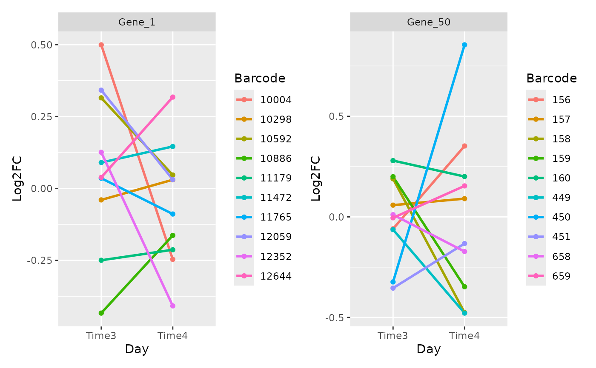
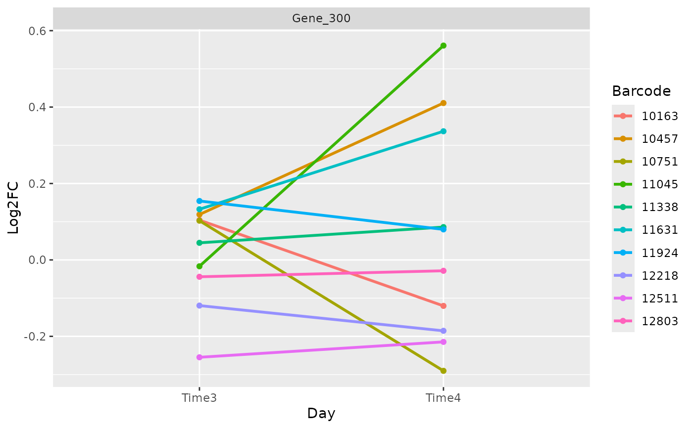

Plot the log2FC over time of the barcodes in the different time point. This plot is useful to check we efficacy of each shRNA. Good shRNAs should have consistent trend trend over time.
Arguments
- list_data_measure
A list containing the measure table of the different time point. Generated using the compute_metrics function.
- genes
The vector of genes name.
- n_col
The number of column to use in the facet wrap.
- size_line
The thickness of the line.
- color
The vector of colors. One color for each barcode.
Examples
object <- get0("object", envir = asNamespace("ScreenR"))
metrics <- dplyr::bind_rows(
compute_metrics(object,
control = "TRT", treatment = "Time3",
day = "Time3"
),
compute_metrics(object,
control = "TRT", treatment = "Time4",
day = "Time4"
)
)
# Multiple Genes
plot_barcode_trend(metrics,
genes = c("Gene_1", "Gene_50"),
n_col = 2
)
#> Warning: Using `size` aesthetic for lines was deprecated in ggplot2 3.4.0.
#> ℹ Please use `linewidth` instead.
#> ℹ The deprecated feature was likely used in the ScreenR package.
#> Please report the issue at <https://github.com/EmanuelSoda/ScreenR/issues>.

# Single Gene
plot_barcode_trend(metrics, genes = "Gene_300")
#> $Gene_300

#>